Teori for stropping og kran
Anhukerklar hjelper deg å øve teorien til anhukeropplæringen (G11) og fellesdelen for kran – stropping, løfteredskap, signaler og sikkerhet.
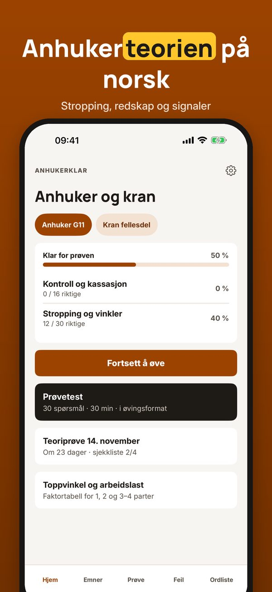
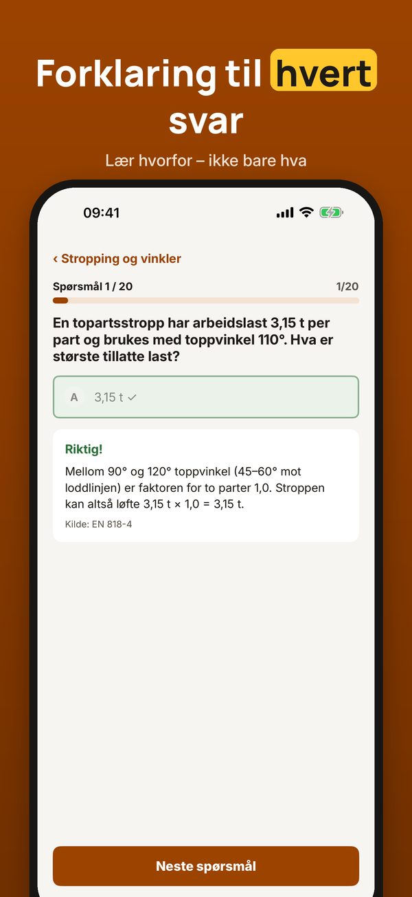
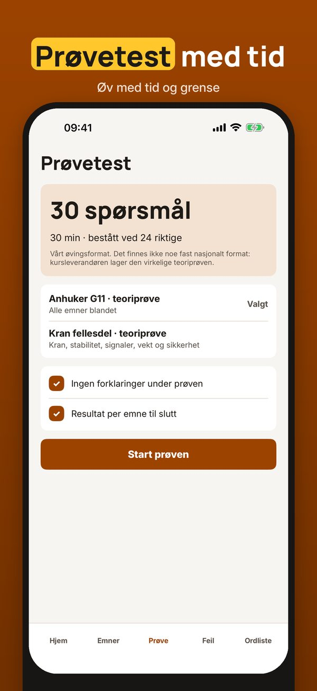
Du kan øve på 20 spørsmål, ordlisten og sjekklisten uten kjøp. Fullversjonen er et engangskjøp som låser opp alle spørsmål, prøvetester og statistikk. Ingen abonnement.
Anhukerklar er uavhengig og ikke tilknyttet Arbeidstilsynet eller noen kursleverandør. Kompetansebevis får du hos en godkjent opplæringsvirksomhet.
Terms of Use (EULA): https://www.apple.com/legal/internet-services/itunes/dev/stdeula/
Privacy: https://baytechbv.github.io/privacy/anhuker-nordic/
Teori til anhugning og kran
Lyftklar hjælper dig med at øve teorien til anhuggerkurset og kranens fællesdel – anhugning, løftegrej, signaler og sikkerhed.
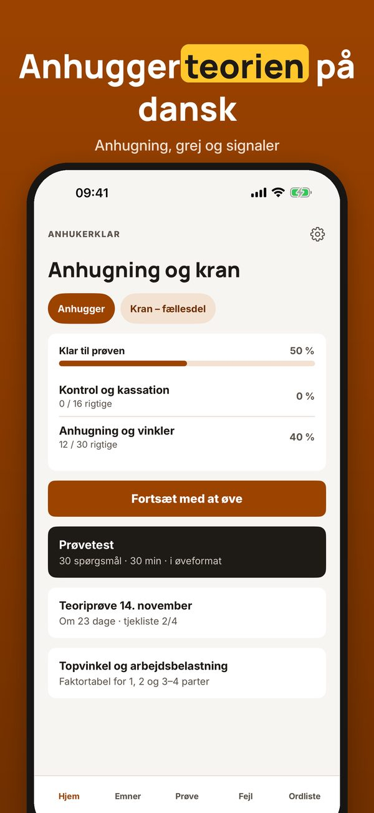
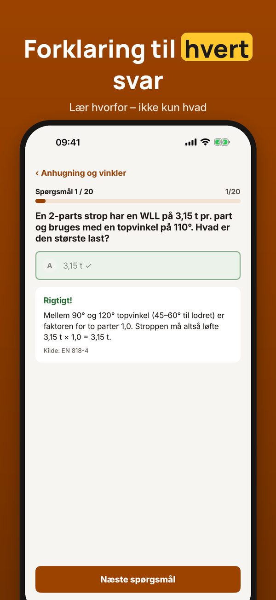
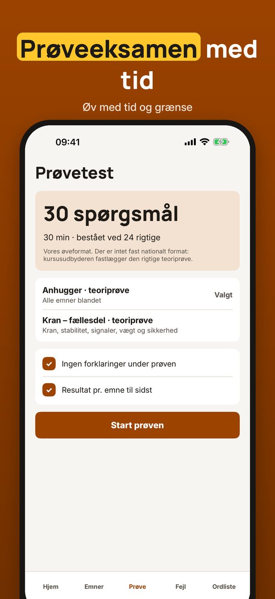
Du kan øve 20 spørgsmål, ordlisten og tjeklisten uden køb. Den fulde version er et engangskøb, der låser alle spørgsmål, prøveeksamener og statistik op. Intet abonnement.
Lyftklar er uafhængig og ikke tilknyttet Arbejdstilsynet eller nogen kursusudbyder. Beviset får du hos en godkendt uddannelsesudbyder.
Terms of Use (EULA): https://www.apple.com/legal/internet-services/itunes/dev/stdeula/
Privacy: https://baytechbv.github.io/privacy/anhuker-nordic/
Taakankiinnitys ja nosturit
Lyftklar auttaa harjoittelemaan taakankiinnityksen ja nosturin käytön teoriaa – nostoapuvälineet, kiinnitys, merkinanto ja turvallisuus.
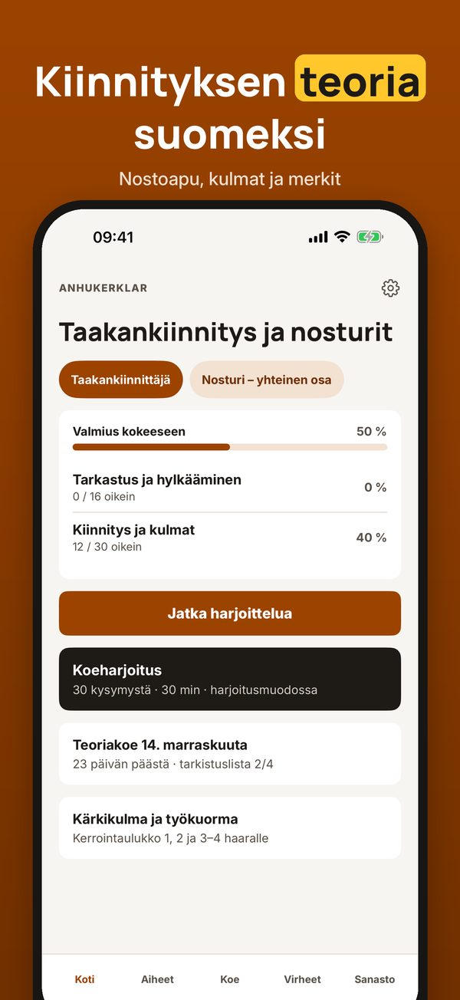
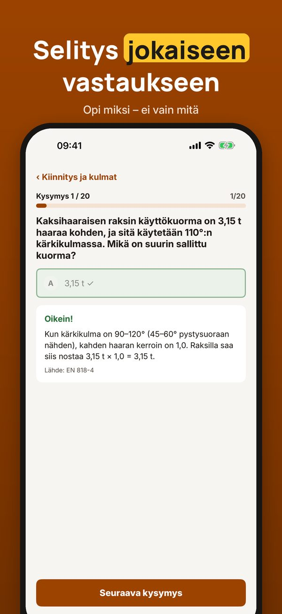
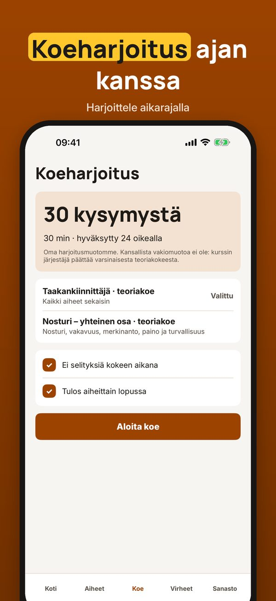
Voit harjoitella 20 kysymystä, sanastoa ja tarkistuslistaa ilman ostoa. Täysi versio on kertaosto, joka avaa kaikki kysymykset, koeharjoitukset ja tilastot. Ei tilausta.
Lyftklar on itsenäinen eikä liity työsuojeluviranomaisiin tai kouluttajiin. Pätevyyden saat hyväksytyltä kouluttajalta.
Terms of Use (EULA): https://www.apple.com/legal/internet-services/itunes/dev/stdeula/
Privacy: https://baytechbv.github.io/privacy/anhuker-nordic/
Stroppning, lyft och kran
Lyftklar hjälper dig att öva teorin för stroppning och lyft med kran – lyftredskap, vinklar, signaler och säkerhet.
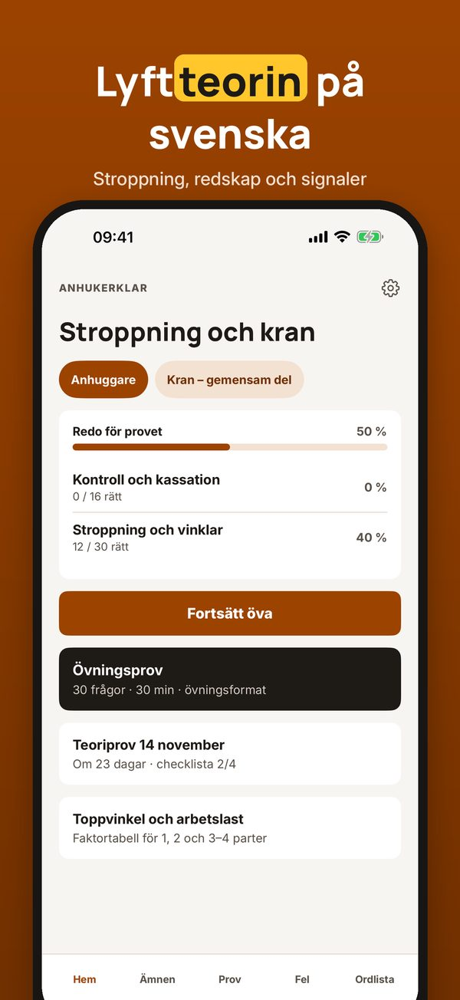
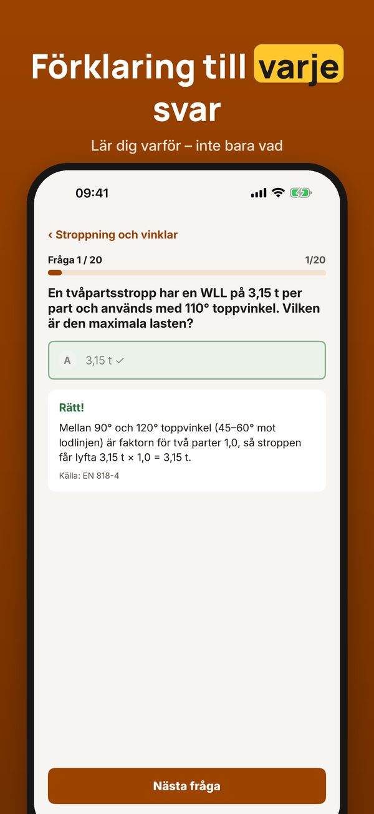
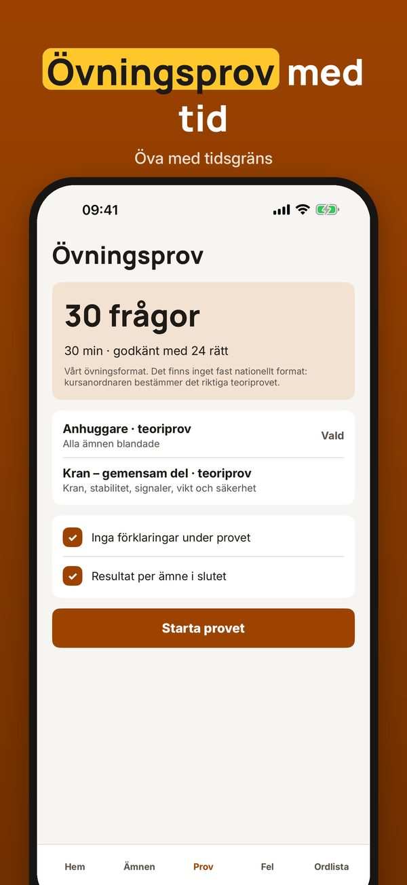
Du kan öva 20 frågor, ordlistan och checklistan utan köp. Fullversionen är ett engångsköp som låser upp alla frågor, övningsprov och statistik. Ingen prenumeration.
Lyftklar är fristående och inte kopplad till Arbetsmiljöverket eller någon kursanordnare. Lyftkortet får du hos en utbildare.
Terms of Use (EULA): https://www.apple.com/legal/internet-services/itunes/dev/stdeula/
Privacy: https://baytechbv.github.io/privacy/anhuker-nordic/
Kranschein-Theorie üben
Lyftklar hilft dir, die Theorie für Anschläger und den Kranschein zu üben – Anschlagmittel, Neigungswinkel, Handzeichen und Sicherheit.
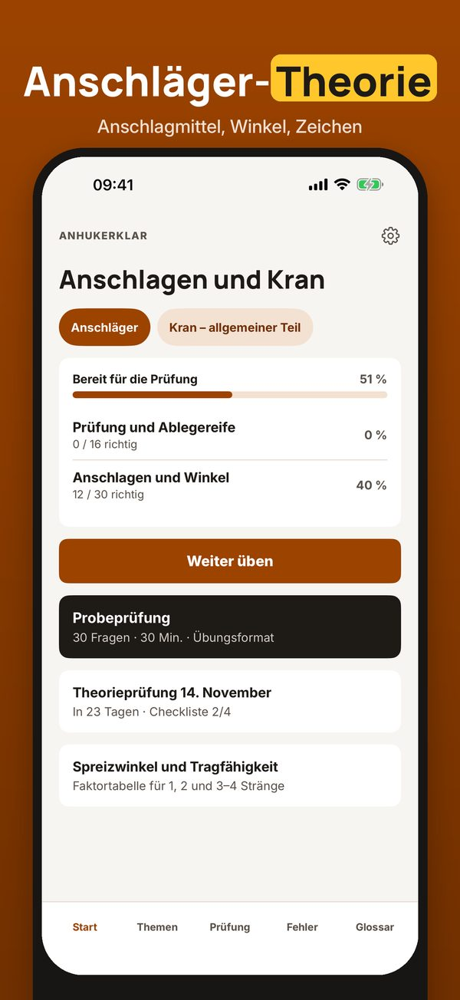
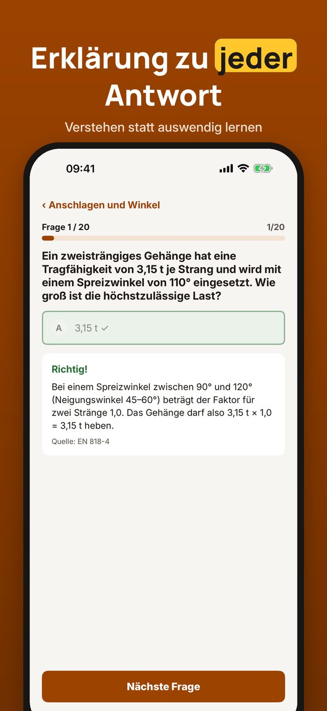
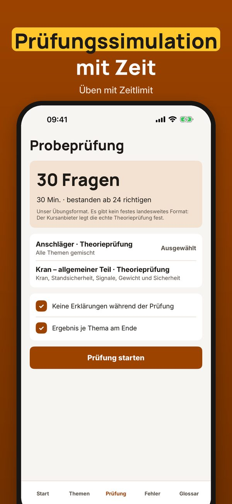
20 Fragen, die Begriffe und die Checkliste kannst du ohne Kauf nutzen. Die Vollversion ist ein Einmalkauf und schaltet alle Fragen, Simulationen und die Statistik frei. Kein Abo.
Lyftklar ist unabhängig und nicht mit Berufsgenossenschaften oder Schulungsanbietern verbunden. Den Nachweis erhältst du beim Schulungsanbieter.
Terms of Use (EULA): https://www.apple.com/legal/internet-services/itunes/dev/stdeula/
Privacy: https://baytechbv.github.io/privacy/anhuker-nordic/